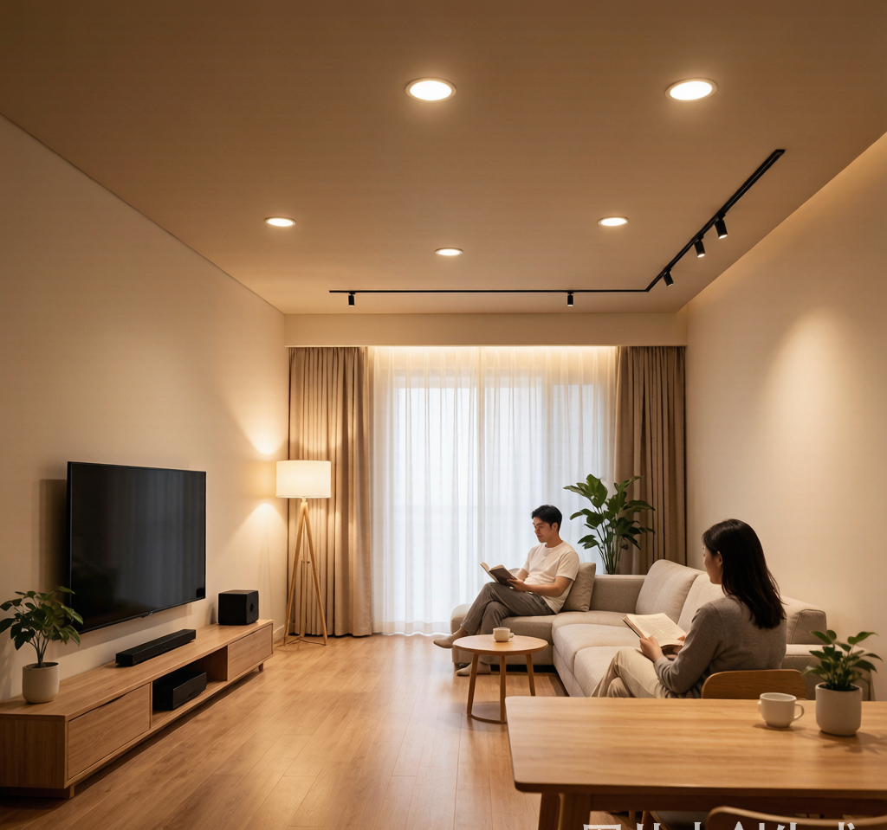
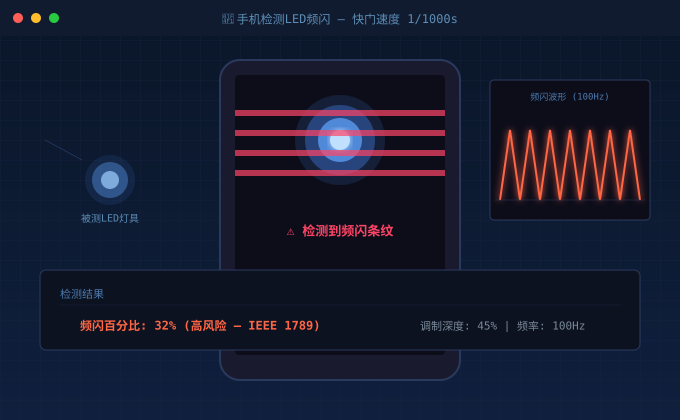
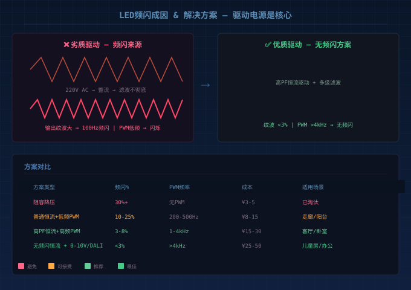
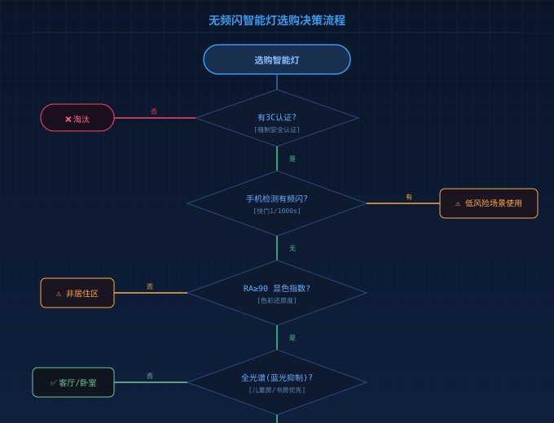

为什么花大价钱买的智能灯，开了就觉得眼睛累？
不知道你有没有过这种体验：装修时精挑细选了一批"高显色""全光谱"的智能筒灯射灯，装好之后灯是亮了，但总觉得哪里不对劲——看东西有点晃眼，盯久了眼睛酸、头晕，甚至手机拍照时屏幕上出现一道道滚动的条纹。
这很可能就是 LED频闪 在作祟。
频闪这东西很"阴险"——肉眼直接看不太出来，但你的瞳孔、视网膜和大脑一直在被动适应这种快速的光线波动，久而久之就是眼疲劳、注意力下降。对有小孩的家庭来说，长期在频闪严重的灯光下学习，甚至可能影响视力发育。

频闪到底是怎么来的？
要理解频闪，先得搞懂LED灯是怎么发光的。
LED灯珠本身是直流器件——给它恒定的直流电，它就稳定发光，理论上没有任何频闪。问题出在驱动电源上。
市电是220V/50Hz交流电，必须通过驱动电源转换成LED需要的低压直流电。在这个过程中，如果驱动电源的输出纹波太大，或者采用了低频PWM调光，就会产生人眼可感知的频闪。
频闪的两大元凶
| 原因 | 原理 | 表现 | 高发场景 |
|---|---|---|---|
| 电源纹波 | 交流整流滤波不彻底，直流输出叠加了100Hz工频波纹 | 持续低频闪烁，类似老式日光灯 | 廉价驱动、阻容降压方案 |
| PWM调光 | 通过快速开关LED来调节亮度，低频时人眼可感知 | 低亮度档位频闪明显 | 低端调光驱动、非恒流方案 |
关键参数：频闪百分比（IEEE 1789标准）
IEEE 1789-2015 对LED照明的频闪给出了明确的分级标准：
- 频闪百分比 < 5%：无风险，适合长时间工作和学习
- 频闪百分比 5%~20%：低风险，短时间使用可接受
- 频闪百分比 > 20%：高风险，不建议在居住和学习空间使用
高质量的恒流驱动电源可以将输出纹波控制在3%以内，再配合高频PWM调光（>1000Hz），实现人眼完全不可感知的无频闪效果。

怎么简单检测家里的灯有没有频闪？
你不需要专业仪器，掏出手机就能测：
手机相机检测法（最常用）
- 打开手机相机，切换到专业模式或手动模式
- 将快门速度调到1/1000秒或更高
- 将手机镜头对准发光的灯具
- 观察屏幕：如果出现黑色条纹滚动，说明存在频闪
⚠️ 注意：iPhone默认相机有防频闪算法，检测效果不如安卓机。建议用安卓手机测试。
风扇检测法
拿一个小风扇（手持小风扇就行），在灯光下旋转扇叶。如果扇叶看起来有"定格"或"重影"效果，说明灯光有频闪。
专业级：频闪仪/示波器
如果是专业用户或工程验收，可以用手持频闪仪直接读数，或用示波器测量驱动电源输出端的纹波电压。
2026年主流无频闪方案对比
市面上号称"无频闪"的产品很多，但方案差异巨大：
| 方案 | 频闪百分比 | PWM频率 | 成本 | 适合场景 |
|---|---|---|---|---|
| 阻容降压 | 30%+ | 无PWM | ¥3-5 | 已淘汰，不建议 |
| 普通恒流驱动+低频PWM | 10%-25% | 200-500Hz | ¥8-15 | 走廊、阳台等短时停留区 |
| 高PF恒流驱动+高频PWM | 3%-8% | 1000-4000Hz | ¥15-30 | 客厅、卧室、书房 |
| 无频闪恒流驱动+0-10V/DALI | <3% | >4000Hz | ¥25-50 | 儿童房、办公、商业空间 |
结论很简单：如果你家是日常居住，特别是儿童房和书房，直接上第三档或第四档方案。省那十几块钱换来的可能是全家的眼睛健康隐患。
选购无频闪智能灯的5个要点
- 问驱动方案：不要只看"无频闪"三个字，问清楚是什么驱动方案，PWM频率多少，频闪百分比多少
- 看认证：3C认证是入门（强制性安全认证），但如果产品还通过了无频闪认证（如CQC无频闪认证），那就更稳了
- 手机实测：买回来先用手机相机高快门测一下，低亮度档尤其要测
- 关注RA/显色指数：无频闪 + 高显色（RA≥90）才算真正的健康光环境。RA≥95的灯具色彩还原度接近自然光
- 全光谱＞普通高显色：全光谱LED补全了普通LED缺失的红光和短波光谱，蓝光峰值更平缓，对眼睛更友好

Zigbee智能灯的频闪问题
很多用户发现，同样是智能灯，Zigbee协议的灯在调光时比WiFi灯的频闪要轻。这不是错觉。
原因在于：Zigbee智能灯通常采用本地网关+恒流驱动方案，PWM调光信号由本地网关直接发送给驱动芯片，延迟低、信号稳定，可以实现更高的PWM频率。而很多WiFi灯的调光指令走云端来回，延迟高，驱动芯片只能降低PWM频率来保证响应速度。
这也是为什么在智能照明领域，Zigbee协议在调光品质上比WiFi有明显优势——不仅是频闪问题，还包括调光平滑度、最低亮度、色温一致性等维度。
总结
LED频闪不是一个"有或没有"的二元问题，而是一个程度问题。市面上几乎不存在绝对的"零频闪"产品（物理上不可能），但优质驱动电源可以将频闪控制在人眼和手机相机都完全感知不到的水平。
买灯别只看价格和颜值，驱动电源才是真正的"心脏"。一盏好灯 = 优质LED光源 + 无频闪驱动电源 + 精准光学设计。三个条件缺一不可。
耐利普 Nexlamp 涂鸦Zigbee智能照明产品线全系采用高PF无频闪恒流驱动方案，PWM频率>4000Hz，频闪百分比<5%，通过3C认证。RA90/RA98高显色可选，守护家庭健康光环境。
咨询/采购：13825496855 | www.nexlamp.com